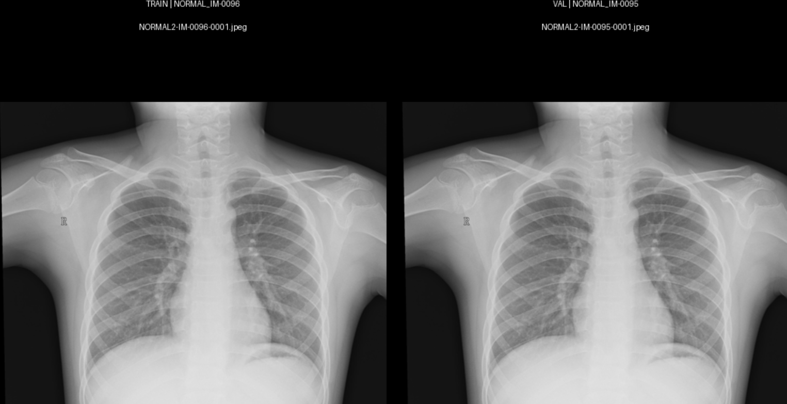
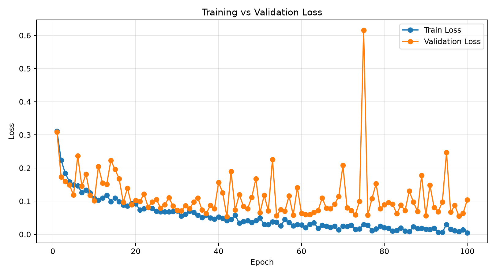
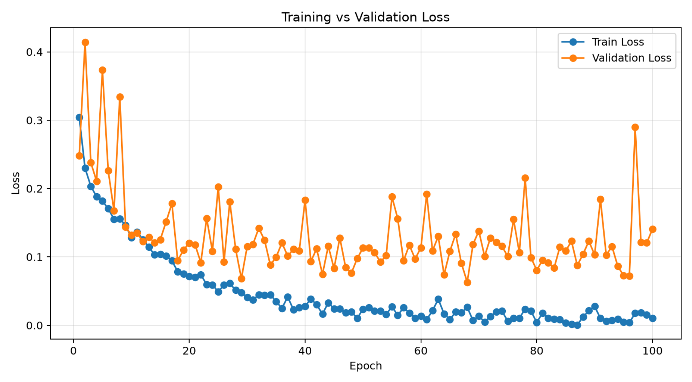
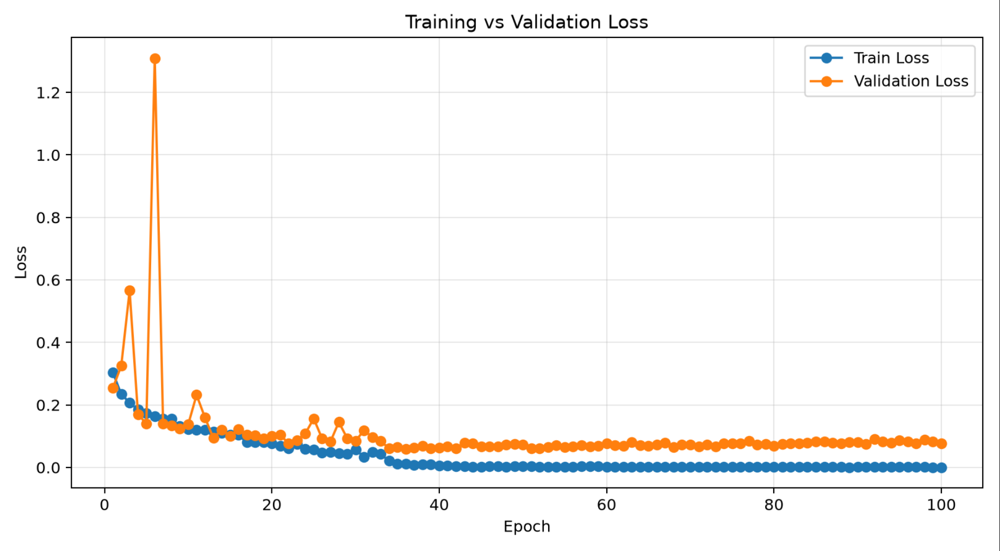
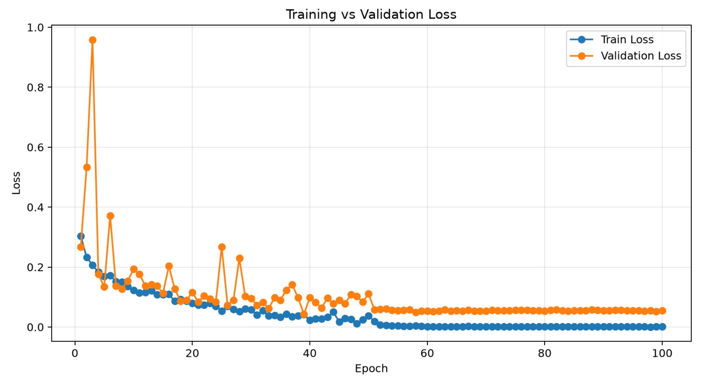
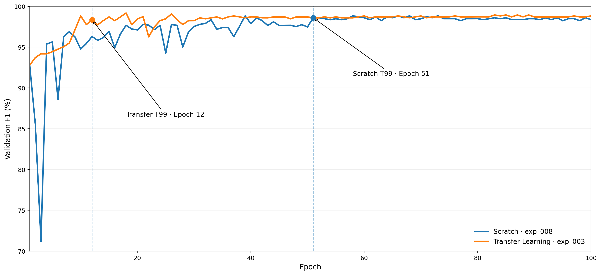

Chest X-ray 폐렴 분류
Scratch vs Transfer Learning 비교
Data Integrity · Training Stability · Convergence · Test Evaluation

목차
지난주 진행사항
Scratch Baseline · 높은 Validation 성능
Scratch Baseline
ResNet-50 · Scratch
데이터 무결성 검증
Duplicate Audit · Clean Split
데이터 무결성 검증
동일 Group이 여러 Split에 포함되는지 검사
파일 내용이 완전히 동일한 Exact Duplicate 검사
시각적으로 유사한 이미지 후보 탐색
Cross-split 중복 이미지 검사
총 71쌍의 Cross-split 후보

Clean Split 재구성
1장 제외
StratifiedGroupKFold
5,855 Images
2,233 Groups
279 Groups
278 Groups
Clean Split 무결성 재검증
Scratch 탐색 실험
Validation Instability · Adaptive LR · Weight Decay
Clean Split에서의 Scratch 성능
Epoch 98
Validation 성능의 불안정성

Fixed Learning Rate 감소
LR을 낮춰도 변동성은 지속

Validation Loss 기반 Adaptive LR
1e-4 유지
Validation Loss 기반 조절
Adaptive LR 적용 후 안정성 개선

Weight Decay 강화

Scratch vs Transfer Learning
Research Question · Convergence · Fair Comparison
Scratch vs Transfer Learning
분류 성능과 학습 수렴 속도에서 어떤 차이를 보이는가?
분류 성능을 보일 것이다
안정적인 고성능 영역에 도달할 것이다
Convergence 정의
Transfer Learning 학습 전략
IMAGENET1K_V2
Backbone Frozen
Backbone + FC
Epoch 1 92.78%
Epoch 7 95.17%
Epoch 12 95.49%
동일한 2 × 2 탐색 조건
Scratch
| WD 1e-3 (0.001) |
WD 1e-2 (0.01) |
|
|---|---|---|
| LR 1e-4 (0.0001) |
exp_008 | exp_009 |
| LR 5e-5 (0.00005) |
exp_010 | exp_011 |
Transfer Learning Freeze 7
| WD 1e-3 (0.001) |
WD 1e-2 (0.01) |
|
|---|---|---|
| FT LR 1e-4 (0.0001) |
exp_002 | exp_003 |
| FT LR 5e-5 (0.00005) |
exp_005 | exp_004 |
비교 결과
Validation · Convergence · Independent Test
Scratch 탐색 결과
| Experiment | Learning Rate | Weight Decay | Best Val F1 | Epoch |
|---|---|---|---|---|
| exp_008 | 1e-4 (0.0001) | 1e-3 (0.001) | 98.84% | 68 |
| exp_009 | 1e-4 (0.0001) | 1e-2 (0.01) | 98.37% | 92 |
| exp_010 | 5e-5 (0.00005) | 1e-3 (0.001) | 97.89% | 83 |
| exp_011 | 5e-5 (0.00005) | 1e-2 (0.01) | 98.13% | 64 |
Transfer Learning 탐색 결과
| Experiment | Fine-tune LR | Weight Decay | Best Val F1 | Global Epoch |
|---|---|---|---|---|
| exp_002 | 1e-4 (0.0001) | 1e-3 (0.001) | 99.07% | 14 |
| exp_003 | 1e-4 (0.0001) | 1e-2 (0.01) | 99.19% | 18 |
| exp_005 | 5e-5 (0.00005) | 1e-3 (0.001) | 99.07% | 30 |
| exp_004 | 5e-5 (0.00005) | 1e-2 (0.01) | 98.60% | 18 |
Validation 성능 비교
Best Validation F1
Best Validation F1
수렴 속도 비교

독립 Test 평가
Test F1
Test F1
| Metric | Scratch | Transfer Learning |
|---|---|---|
| Accuracy | 97.61% | 96.07% |
| Recall | 98.36% | 97.19% |
| Precision | 98.36% | 97.42% |
| AUROC | 99.51% | 99.56% |
가설 검증
Validation Best F1
TL 99.19% · Scratch 98.84%
Independent Test F1
Scratch 98.36% · TL 97.30%
Primary T99
Scratch 51 Epochs
Transfer Learning
12 Epochs
실험의 한계
하나의 Pediatric CXR Dataset에서 평가
Seed 42를 기준으로 실험
각 방식에 동일한 2 × 2 Search Budget 적용
Transfer Learning의 Freeze 구간을 7 Epochs로 고정
현재 진행상황
Grad-CAM++ · PyQt UI
현재 진행상황 및 다음 단계
Group · SHA · pHash
Scratch · Transfer Learning
Validation · Convergence · Test
모델 판단 근거 시각화
Grad-CAM++ 분석 완료 후 사용자 인터페이스 구현
감사합니다
Scratch vs Transfer Learning